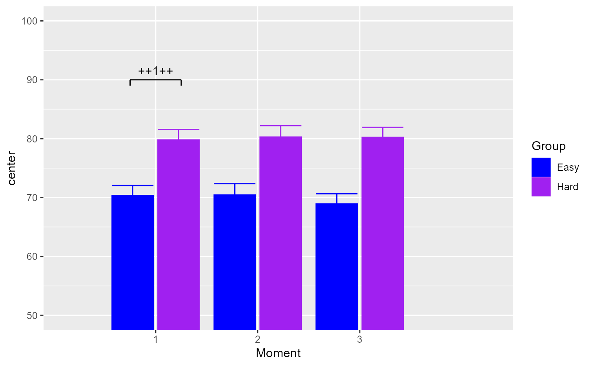
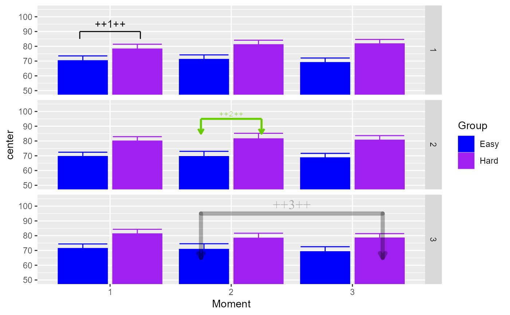
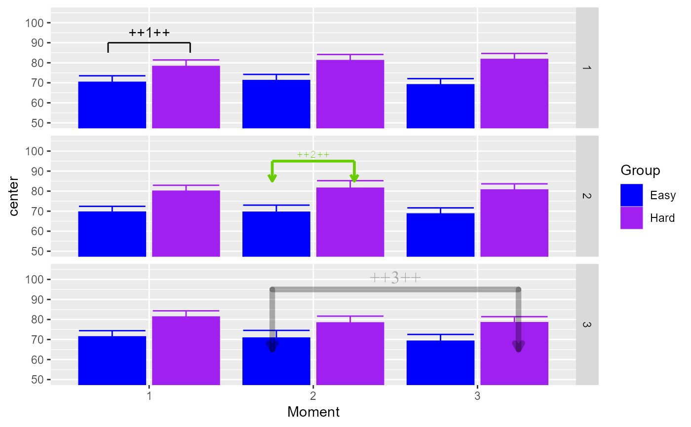

showSignificance() is used to add an annotation to
a ggplot in the form of a square bracket with a text. The bracket
extends from x range (left, right) with a heigth of width. It is also possible
to have the bracket and the text vertical when y is a range (bottom, top).
Arguments
- x
(a vector of 2 when horizontal) indicates the limits of the annotation;
- y
(a vector of 2 when vertical) the location of the annotation in the
ydirection- width
height of the annotation; for negative
width, the legs extends towards the bottom;- text
(optional) string text to be display on the opposite side of
width;- panel
(optional) a list to identify in which panel to put the annotation;
- segmentParams
(optional) a list of directives that will be sent to the
geom_segment()items;- textParams
(optional) a list of directives that will be sent to the
geom_text()item.
Value
adds an annotation in a ggplot
Examples
# loading required libraries
library(superb)
library(ggplot2)
library(grid)
# making one random data set with three factors 2 x 3 x (3)
dta <- GRD(
SubjectsPerGroup = 20,
BSFactors = c("Group(2)","Age(3)"),
WSFactors = c("Moment(3)"),
Population = list(mean = 75, stddev = 5),
Effects = list("Group" = slope(10) )
)
# making a two-factor plot and a three-factor plots (having panels)
plt2 <- superb(
cbind(DV.1,DV.2,DV.3) ~ Group,
dta,
WSFactor = c("Moment(3)"),
adjustments = list(purpose="difference"),
factorOrder = c("Moment","Group")
)
plt3 <- superb(
cbind(DV.1,DV.2,DV.3) ~ Group + Age,
dta,
WSFactor = c("Moment(3)"),
adjustments = list(purpose="difference"),
factorOrder = c("Moment","Group","Age")
)
# lets decorate these plots a bit...
plt2 <- plt2 + scale_fill_manual( name = "Group",
labels = c("Easy", "Hard"),
values = c("blue", "purple")) +
scale_colour_manual( name = "Group",
labels = c("Easy", "Hard"),
values = c("blue", "purple")) +
coord_cartesian( ylim = c(50,100), xlim = c(0.5, 3.9) )
plt3 <- plt3 + scale_fill_manual( name = "Group",
labels = c("Easy", "Hard"),
values = c("blue", "purple")) +
scale_colour_manual( name = "Group",
labels = c("Easy", "Hard"),
values = c("blue", "purple")) +
coord_cartesian( ylim = c(50,105) )
# a very basic example
plt2 + showSignificance( c(0.75, 1.25), 90, -1, "++1++")

# the annotation can be vertical when y is a vector with bottom and top location:
plt2 + showSignificance( 3.75, c(70,80), -0.1, "++1++")
 # an example with panels; the "panel" argument is used to identify on
# which panel to put the annotation (or else they appear on all panels)
# and with arms of differing lengths, and one flat ending
plt3 +
showSignificance( c(0.75, 1.25), 90, -2.5, "++1++", panel = list(Age= 1)) +
showSignificance( c(1.75, 2.25), 90, -2.5, "++2++", panel = list(Age= 2)) +
showSignificance( c(0.75, 1.25), 90, c(-10,-5), "++3++", panel = list(Age= 3)) +
showSignificance( c(2.00, 3.25), 95, -10, "++4++", panel = list(Age= 3)) +
showSignificance( c(1.75, 2.25), 85, 0, panel = list(Age= 3))
# here, we send additional directives to the annotations
plt3 +
showSignificance( c(0.75, 1.25), 90, -5, "++1++", panel = list(Age= 1)) +
showSignificance( c(1.75, 2.25), 95, -10, "++2++", panel = list(Age = 2),
textParams = list(size = 3, # smaller font
family = "mono", # courrier font
colour= "chartreuse3" # dark green color
),
segmentParams = list(linewidth = 1., # thicker lines
arrow = arrow(length = unit(0.2, "cm") ), # arrow heads
colour = "chartreuse3" # dark green color as well
)
) +
showSignificance( c(1.75, 3.25), 95, -30, "++3++", panel = list(Age = 3),
textParams = list(size = 5, # larger font
family = "serif", # times font
alpha = 0.3 ), # transparent
segmentParams = list(linewidth = 2.,
arrow = arrow(length = unit(0.2, "cm") ),
alpha = 0.3,
lineend = "round" # so that line end overlap nicely
)
)

# an example with panels; the "panel" argument is used to identify on
# which panel to put the annotation (or else they appear on all panels)
# and with arms of differing lengths, and one flat ending
plt3 +
showSignificance( c(0.75, 1.25), 90, -2.5, "++1++", panel = list(Age= 1)) +
showSignificance( c(1.75, 2.25), 90, -2.5, "++2++", panel = list(Age= 2)) +
showSignificance( c(0.75, 1.25), 90, c(-10,-5), "++3++", panel = list(Age= 3)) +
showSignificance( c(2.00, 3.25), 95, -10, "++4++", panel = list(Age= 3)) +
showSignificance( c(1.75, 2.25), 85, 0, panel = list(Age= 3))
# here, we send additional directives to the annotations
plt3 +
showSignificance( c(0.75, 1.25), 90, -5, "++1++", panel = list(Age= 1)) +
showSignificance( c(1.75, 2.25), 95, -10, "++2++", panel = list(Age = 2),
textParams = list(size = 3, # smaller font
family = "mono", # courrier font
colour= "chartreuse3" # dark green color
),
segmentParams = list(linewidth = 1., # thicker lines
arrow = arrow(length = unit(0.2, "cm") ), # arrow heads
colour = "chartreuse3" # dark green color as well
)
) +
showSignificance( c(1.75, 3.25), 95, -30, "++3++", panel = list(Age = 3),
textParams = list(size = 5, # larger font
family = "serif", # times font
alpha = 0.3 ), # transparent
segmentParams = list(linewidth = 2.,
arrow = arrow(length = unit(0.2, "cm") ),
alpha = 0.3,
lineend = "round" # so that line end overlap nicely
)
)
